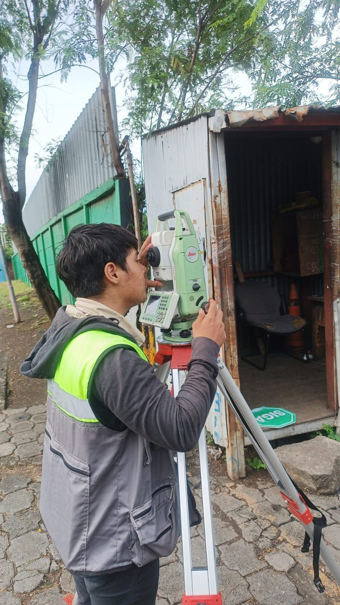

Topografía
Levantamiento de poligonal en la Rotonda El Periodista, Managua
Ejecutamos un levantamiento topográfico de poligonal con estación total en una de las zonas de mayor tránsito de Managua, generando la planimetría base que el proyecto necesitaba para avanzar con precisión desde el primer trazo.